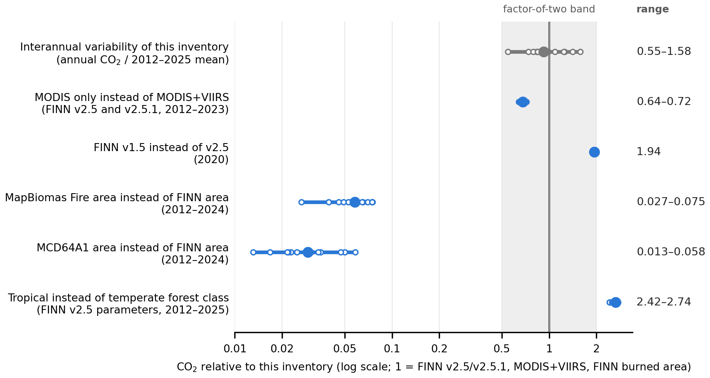
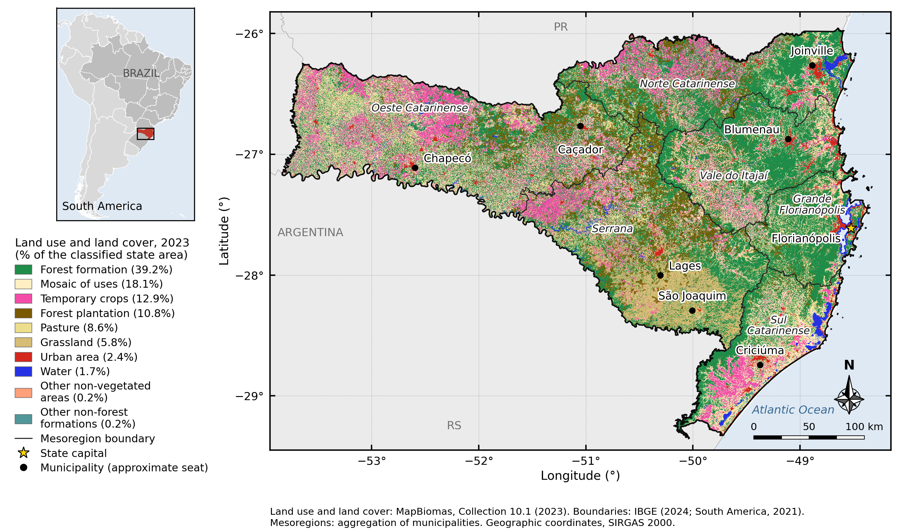
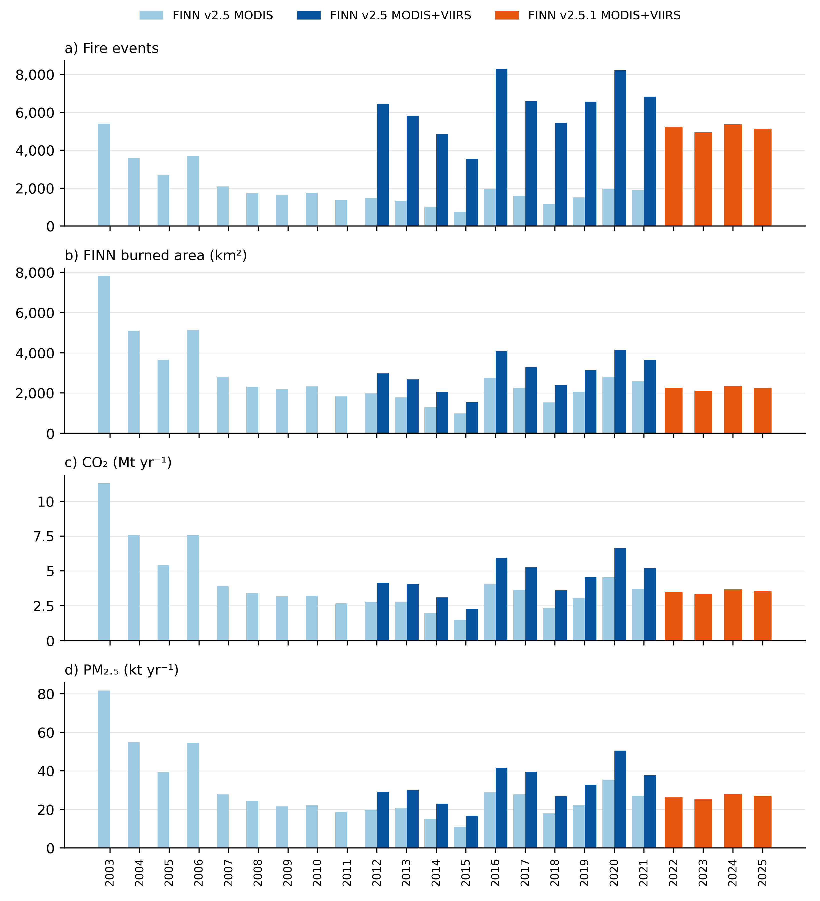
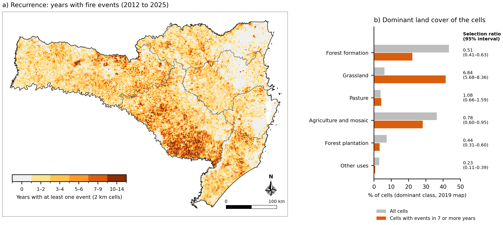
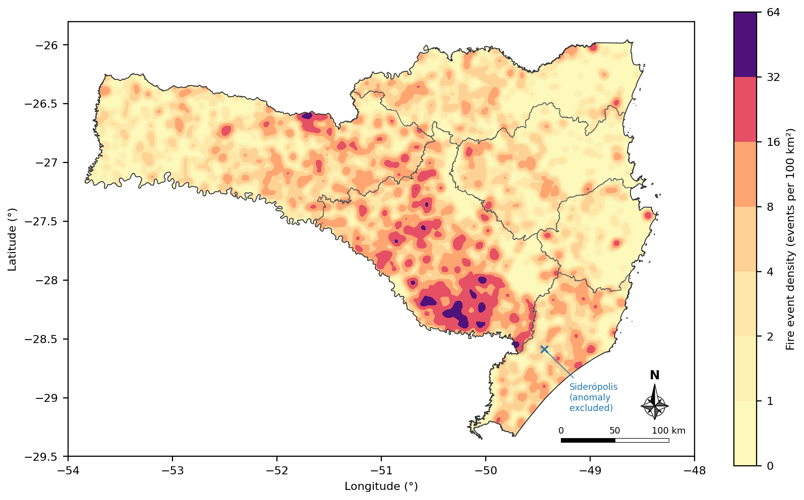

Read chapters 2 to 4 to understand the study, chapters 5 to 7 to run it, and the rest when you need it. Every chapter opens with this orange box, so you can stop after it and still keep the main point.
After this chapter you will be able to:
| If you want to… | Read |
|---|---|
| know what the study found, in plain words | 2 |
| understand how satellites and FINN estimate emissions | 3 and 4 |
| run everything and check the results | 5, 6 and 7 |
| trace one published number to its code | 8 |
| understand the statistics | 9 |
| compare FINN versions and other inventories | 10 |
| build the inventory of another region | 11 and 12 |
Key idea | The one idea to keep from the section. |
Watch out | A common mistake or a limit of the data. |
Do it | Commands to type, in order. |
Check | How to know that it worked. |
Deep dive (optional) | Extra detail for specialists; safe to skip. |
Nothing in this tutorial is new: every number comes from a file in results/, written by a script of the repository and checked by an automated test. When the text gives a number, the chapter or the table of chapter 8 tells you where it comes from.
Fire emissions in Santa Catarina vary a lot between years, but three methodological choices change the totals as much as, or more than, the years do: adding VIIRS detections, the FINN version and the forest class. Comparisons between years and municipalities hold; absolute totals carry these uncertainties.
After this chapter you will be able to:
3,549–8,296 fire events per year, 2012–2025, with no monotonic trend | 3.55 Mt CO2 in 2025 (FINN v2.5.1, MODIS+VIIRS) | 2.9× ratio between the highest (2020) and lowest (2015) annual CO2 | 53.6% of grassland-dominated 2 km cells burned in 7 or more of 14 years |

python/analysis/fig_v71.py; values in results/tables/sensitivity_factors.csv (a15_v7_review.py) and forest_class_scenario_annual.csv (a19_v72_followup.py).“Fire event” here is a FINN daily burned-area polygon, a model unit. It is neither a field-verified fire nor an INPE hotspot, so counts from other sources are compared only with the definitions side by side (chapter 3).
Satellites detect the heat of active fires. FINN turns each detection into burned area, multiplies it by fuel, burned fraction and emission factors, and writes one row (a record) per detection and vegetation type. We count fire events, the daily burned-area polygons, after removing persistent heat sources.
After this chapter you will be able to:
Open burning releases CO2, CO, fine particles (PM2.5), nitrogen oxides and volatile organic compounds. Air-quality models, health studies and climate inventories need these emissions by place and day, and ground measurements cannot cover a whole State. Satellite inventories fill this gap.
MODIS (on the Terra and Aqua satellites) detects active fires in 1 km pixels; VIIRS (Suomi NPP, NOAA-20) does so in 375 m pixels and sees smaller fires (Giglio et al., 2016; Schroeder et al., 2014). Each satellite passes over a place about twice a day, so fires that start and end between passes, or under clouds, are missed.
For each detection, FINN assigns a burned area (A) from the pixel and the vegetation map, the fuel loading (B) and the fraction burned (CF) of the vegetation type, and an emission factor (EF) for each compound (Wiedinmyer et al., 2011, 2023). The vegetation types are six generic classes (GENVEG): grassland and savanna, woody savanna and shrubland, tropical forest, temperate forest, boreal forest and cropland.
Counts change by unit. In 2025: 8,581 records, 5,489 detections and 5,160 fire events (5,121 after the screening below). This repository counts fire events, each assigned to the municipality that holds most of its area (a01_events_screening.py → state_counts.csv).
Some heat sources are not vegetation fires: industrial plants, mines, burning coal waste. A location with detections on 16 or more days of a calendar year within 1 km is treated as a persistent thermal anomaly, the criterion of the MODIS product (Giglio et al., 2021). These events are removed from counts and maps and kept in the emission totals, where their share is small (at most 2.5% of CO2, in 2020).
FINN files give gases in mol/day and aerosols (OC, BC, PM2.5) and a few mass fields in kg/day. Tonnes of a gas = mol × molar mass (g/mol) × 10−6; tonnes of an aerosol = kg × 10−3. In the FINN v2.5 files, NOXasNO, NMOC and NMHC are already mass fields (kg/day); NOx is reported as the mass of NO and VOC as NMOC (python/finn_sc/convert_units.py, checked by a09_emission_factor_check.py).
FINN burned area is the area assigned to each detection by the model, much larger than the area mapped from burn scars: median 17 times MapBiomas Fire and 34 times MCD64A1 in Santa Catarina. Use it as a model term, not as mapped burned area.
This inventory uses FINN v2.5 (2012–2021) and v2.5.1 (2022–2025) with MODIS and VIIRS. Two conventions of the model matter in Santa Catarina: FINN v1.5 adds next-day copies of fires (v2.5 does not, at these latitudes), and both versions classify the State's forests as temperate because it lies south of 23.5° S.
After this chapter you will be able to:
| Version | Detections | Years | File (GEOS-Chem, each fire) |
|---|---|---|---|
| v1.5 | MODIS | 2002–2020 | FINNv1.5_<year>.GEOSCHEM.tar.gz (annual, every year) |
| v2.5 | MODIS | 2003–2021 | FINNv2.5_mod_GEOSCHEM_<year>_c2021…txt.gz |
| v2.5 | MODIS+VIIRS | 2012–2021 | FINNv2.5_modvrs_GEOSCHEM_<year>_c2021…txt.gz |
| v2.5.1 | both | 2022–2023 | monthly files |
| v2.5.1 NRT | MODIS+VIIRS | 2024– | daily near-real-time files |
The exact addresses are built by R/utils_finn.R and python/finn_sc/download.py. The FINN v1.5 file of 2002 is also a .tar.gz archive; an older .txt.gz address returns “404 Not Found” (corrected on 11 Nov 2026).
Because MODIS does not observe low and middle latitudes every day, FINNv1 counts each detection for two days, the second at half its size, unless the place is detected again; its authors noted that this assumption had yet to be verified (Wiedinmyer et al., 2011). In 2020, 1,893 of the 4,609 FINN v1.5 records in Santa Catarina were such continuations, 27.0% of the CO2 (a17_v72_review.py). FINN v2.5 keeps the rule only between 23.5° N and 23.5° S (Wiedinmyer et al., 2023), and our FINN v2.5 and v2.5.1 records confirm it: 1 of 151,443 day-location pairs has the half-size signature (a20_finn15_correction.py).
FINN v2.5 classes evergreen broadleaf and mixed forests as tropical forest only between 23.5° N and 23.5° S, and as temperate forest elsewhere (Wiedinmyer et al., 2023, Table 1). Santa Catarina (25.96° S to 29.36° S) falls outside, although its forests belong to the Atlantic Forest. The class sets the fuel loading: in South America, 26,755 g m−2 for tropical and 7,400 g m−2 for temperate forest. With the tropical class, each forest detection would emit 3.93 times more CO2, and the State's annual CO2 would be 2.42 to 2.74 times larger (a19_v72_followup.py), an upper bound because the class also holds deciduous forest.
There are two routes. Route B recomputes every number of the article offline from the archived records. Route A downloads FINN files from NSF NCAR and builds the records, for Santa Catarina or any other region.
After this chapter you will be able to:
FINN_SC/ ├── README.md, README.pt-BR.md start here ├── TUTORIAL_FINN_SC_en.pdf, _pt.pdf this tutorial ├── config/config.yml every parameter (years, version, region) ├── data/derived/ archived FINN records of SC (route B input) ├── data/external/ MapBiomas, MCD64A1, ERA5-Land, IBGE, FINN v1.5 records ├── data/inputs/ IBGE 2024 municipal mesh of SC ├── python/00_ … 06_*.py route A in Python ├── python/analysis/a01 … a20 route B: one script per group of results ├── python/run_analysis.py route B in one command ├── R/ route A in R; kernel density ├── gee/ Google Earth Engine recipes ├── notebooks/ route A notebooks; BRAIN comparison ├── tools/ maps, FINN v1.5 tools, manifest check ├── tests/ 96 automated tests ├── results/ published tables, figures, logs └── docs/ methods, provenance, data dictionary
Route B starts from data/derived/finn_sc_records_2003_2025.csv.gz: 258,694 FINN v2.5 and v2.5.1 records inside Santa Catarina. It needs no internet and no FINN download.
| Script | Question |
|---|---|
a01 | How many records, detections and events? Which are persistent anomalies? |
a02 | Annual series, Table 2, effect of VIIRS, trend tests |
a03 | Municipalities and mesoregions in 2025; seasonality |
a04 | Area and emissions by vegetation type (GENVEG) |
a05 | FINN area vs MapBiomas Fire |
a06 | Fire activity vs fire-season climate |
a07 | Municipal land cover vs event density |
a08–a09 | Report indicators; unit-conversion check |
a10 | Figures of the earlier manuscript and report |
a11–a12 | Co-authors' questions; Earth Engine outputs (MCD64A1, ERA5-Land) |
a13 | Fire recurrence in 2 km cells and land cover |
a14 | Validity checks (FINN vegetation vs MapBiomas, bootstrap) |
a15 | Robustness: exact trend tests, VIIRS ratio, sensitivity factors |
a16–a17 | FINN v1.5 vs v2.5 in 2020; next-day continuations |
a18 | Exports of municipalities and mesoregions (Comex Stat) |
a19 | Forest-class scenario; NOx of the earlier inventory |
a20 | FINN v1.5 inventories with and without the continuations, 2002–2020 |
Three commands: install, run, check. If the tests say 96 passed and the manifest says 107 files: OK 107, your computer reproduced every published number.
After this chapter you will be able to:
git clone https://github.com/jessicajcss/FINN_SC.git cd FINN_SC conda env create -f environment.yml && conda activate finn # or: python -m pip install -r requirements.txt Rscript install_r_packages.R # optional: R for the kernel density
python python/run_analysis.py --no-r
# without --no-r it also runs R (the annual kernel sensitivity takes about 40 min)Shortcuts: make reproduce, ./run_all.sh analysis (Linux, macOS) or run_all.bat analysis (Windows).
python -m pytest -q tests # 96 passed python tools/verify_manifest.py # 107 files: OK 107
The manifest (results/MANIFEST.sha256) holds the SHA-256 of every published table and log (figures are left out, because PNG files carry the library version in their metadata). OK means identical bytes; EQUIVALENT means that every number agrees within a relative tolerance of 10−9, as happens when another library version prints a different last digit. Run the check in a fresh clone and commit nothing before it.
| Folder | Content |
|---|---|
results/tables/ | CSV tables, one or more per script |
results/figures/ | PNG figures (English _en, Portuguese without suffix; _nn = no note inside the image) |
results/logs/ | one text log per script, with every number printed |
Run the commands from the repository root (the folder that holds README.md). Most errors of “file not found” come from running them inside a subfolder.
Four figures tell the story: where the State is (Figure 1), how the years changed (Figure 2), where fire recurs (Figure 3) and how much the methodological choices weigh (Figure 4, chapter 2).
After this chapter you will be able to:

tools/study_area_map.py.
python/analysis/figures_est_en.py; data series_state_all_products.csv (a02).Compare years within one colour (one FINN configuration). Jumping between colours mixes the change of the fires with the change of the method.

python/analysis/fig_v71.py; data from a13_recurrence_landcover.py.
R/analysis/kde_events.R.python/analysis/fig_v71.py.Every value of the ES&T manuscript has a script, an output file and a log line. The table below lists the main ones; docs/results_map.md lists the numbers of the earlier manuscript and of the report.
After this chapter you will be able to:
| Published value | Script (python/analysis/) | Output (results/tables/) |
|---|---|---|
| 3,549–8,296 events per year (2012–2025) | a02_series_trends.py | series_state_all_products.csv |
| 3.55 Mt CO2 in 2025 (Table 2) | a02_series_trends.py | table2_state_emissions_2012_2025.csv |
| CO2 max/min between years 2.88 | a15_v7_review.py | log a15_v7_review.txt |
| Spearman ρ = −0.68 with precipitation | a06_climate_drivers.py | climate_correlations.csv |
| 53.6% of grassland cells burned ≥ 7 of 14 years | a13_recurrence_landcover.py | recurrence_by_landcover.csv |
| VIIRS: CO2 +39.6% to +56.2% | a02_series_trends.py | viirs_effect.csv |
| FINN v1.5 / v2.5 MODIS = 2.82 (2020) | a17_v72_review.py | finn15_v25_2020_decomposition.csv |
| Continuations 27.0% of CO2 (2020) | a17_v72_review.py | finn15_2020_continuation_rule.csv |
| Tropical forest class: × 2.42 to 2.74 | a19_v72_followup.py | forest_class_scenario_annual.csv |
| FINN area / MapBiomas Fire: median 17.2 | a05_mapbiomas_comparison.py | mapbiomas_state.csv |
| FINN area / MCD64A1: median 34.4 | a12_gee_review_outputs.py | mcd64a1_comparison_summary.csv |
| Earlier inventory = all FINN v1.5 records × 1.002 | a20_finn15_correction.py | finn15_lcqar_2020_correction.csv |
| BRAIN 2019 = records × 1.010, originals × 1.390 | a20_finn15_correction.py | finn15_2019_correction.csv |
| Continuations 27.0–32.4%, 2002–2020; Teixeira = all records | a20_finn15_correction.py | finn15_2002_2020_correction.csv |
| Figure 2 | figures_est_en.py | Fig02_annual_series_4p_en.png |
| Figures 3 and 4 | fig_v71.py | Fig08_…, Fig09_…_nn_en.png |
| TOC graphic | figures_est_v72.py | TOC_graphic_est_v72.png |
python -c "import pandas as pd; t = pd.read_csv('results/tables/table2_state_emissions_2012_2025.csv'); print(t.loc[t.year == 2025, 'CO2'])"
# 13 3.554771e+06 (tonnes)The tests in tests/ assert these values. If a change in the code alters a published number, a test fails and names it.
results/tables/table2_state_emissions_2012_2025.csv, written by a02.Rank-based tests (Mann–Kendall, Sen, Spearman) for short, skewed series; Holm correction for multiple tests; spatial models when neighbouring municipalities are alike; bootstrap by spatial blocks for recurrence; kernel density with several bandwidths.
After this chapter you will be able to:
| Method | Question it answers | Where |
|---|---|---|
| Mann–Kendall test and Sen slope (Mann, 1945; Kendall, 1975; Sen, 1968) | Is there a monotonic trend over the years, and how steep? | a02, a15 |
| Hamed–Rao correction (Hamed and Rao, 1998) | Does autocorrelation between years change the trend test? | a02 |
| Spearman correlation with Holm correction (Holm, 1979) | Do events follow fire-season climate, testing several variables at once? | a06 |
| Moran's I and spatial error model (Moran, 1950; Arraiz et al., 2010) | Is land cover associated with event density once neighbours are accounted for? | a07, a13 |
| Selection ratio with spatial block bootstrap | Does fire fall on a land-cover class more than its area would suggest? | a13, a14 |
| Kernel density (Diggle, 1985; Cronie and van Lieshout, 2018; Baddeley et al., 2015) | Where are events concentrated in 2025? | kde_events.R |
With 14 years, a trend test has little power: “no significant trend” means the data cannot distinguish a trend from year-to-year noise, and the article reports it in these terms.
Ratios of two counts that share a term can correlate by construction (Kronmal, 1993). For this reason the VIIRS increment is analysed as a difference and against independent measures (a15).
Kernel density bandwidth: the main map uses σ = 2.8 km; the Cronie–van Lieshout criterion gives 8.8 km and Scott's rule 21.7 km. The concentration in the Serrana holds across these bandwidths (kde_2025_bandwidths.csv, kde_2025_sensitivity_mesoregion.csv).
For the same 2020 detections, FINN v1.5 gives 2.82 times the FINN v2.5 CO2. The earlier state inventory, BRAIN and Teixeira et al. (2025) used FINN v1.5 with its next-day continuations; removing them lowers their totals by 27.0% to 32.4% per year.
After this chapter you will be able to:
The four factors multiply to the total ratio: the continuations (1/0.730), almost the same number of detections (0.990), 16% more area per detection (1.159) and 58% less CO2 per km² (0.423), mostly because forest detections moved from the tropical to the temperate class. A shift-share split puts 75% of the change within vegetation classes and 25% in the partition between them (a17_v72_review.py).
| Study (FINN v1.5) | What it equals | Without continuations |
|---|---|---|
| LCQAR (2022), SC 2020 | all 4,609 records × 1.002 (its 4,625 “focos” are records) | 1.37 × the 2,716 original detections |
| BRAIN 2019 (Hoinaski et al., 2024) | all records × 1.010 | × 1.390 |
| BRAIN 2020 | 31% of its CO on cell-days without an original detection | continuations included |
| Teixeira et al. (2025), 2002–2017 | sum of all records in 15 of 16 years (2016: 0.36% below) | 27.0–32.4% of yearly CO2 are continuations |
The FINN v1.5 records of 2002, 2016 and 2017 come from the NCAR annual files. tools/download_finn15_years.R downloads and checks them; tools/finn15_raw_to_grid.py cuts each file to the State's box and converts it to tonnes; tools/finn15_records.py assigns the records to municipalities. On the 2015 file, this route reproduced all 3,537 rows of the earlier processing.
Rscript tools/download_finn15_years.R python tools/finn15_raw_to_grid.py FINNv1.5_2016.GEOSCHEM.tar.gz 2016 data/raw_finn/finn15 python tools/finn15_records.py <authors_folder> data/raw_finn/finn15
Compare FINN versions in the text, with their configurations stated. Plotting FINN v1.5 and v2.5 totals on the same axis invites a direct comparison that the different conventions do not support.
Put your boundaries in data/inputs/, edit config/config.yml, run steps 00 to 05. Start with one year: the global FINN files are large.
After this chapter you will be able to:
data/inputs/.config/config.yml, set region.boundaries_shp, region.region_field and region.name, and choose years, version and sensor in selection.make all-py # or ./run_all.sh python, or run_all.bat python
python python/00_download_finn.py
python python/01_convert_units.py
python python/02_clip_region.py
python python/04_aggregate_region.py
python python/05_descriptive_analysis.pyOpen data/output/aggregated_emissions_all.shp in QGIS or read the CSV of the same name.
tests/test_route_a.py replicates the 2,341 records of 1 January to 28 May 2025 in Santa Catarina from the NCAR files, so route A is tested against route B.
Outside 23.5° S to 23.5° N, FINN v2.5 classes forests as temperate (chapter 4). Report this choice, and the detection source, whenever you publish totals for another region.
config/config.yml.Route B runs in Colab as on any computer. The external datasets (MapBiomas, MCD64A1, ERA5-Land) come from the Earth Engine notebooks in gee/, which need a registered Google Cloud project.
After this chapter you will be able to:
/content/FINN_SC and run route B with --no-r.gee/, set PROJECT = "<your project ID>" in cell 2 and run all; cell 3 calls ee.Authenticate() and ee.Initialize(project=PROJECT).!git clone https://github.com/jessicajcss/FINN_SC.git /content/FINN_SC %cd /content/FINN_SC !pip install -q -r requirements.txt !python python/run_analysis.py --no-r !python -m pytest -q tests
The notebooks ending in _run_2026-10-21.ipynb keep the outputs of the runs used in the article, so you can compare yours cell by cell.
PROJECT.Most problems are the environment, the working folder or a download address. The table gives the fix.
| Symptom | Fix |
|---|---|
ModuleNotFoundError | Activate the environment (conda activate finn) or install requirements.txt. |
“file not found” for results/ or data/ | Run from the repository root. |
| A test fails after you changed code | Read the test name: it says which published number changed. |
verify_manifest.py reports DIFFERENT | Install the pinned versions of requirements-lock.txt and run again; the script shows the largest differences. |
| FINN download returns 404 | Check the address in R/utils_finn.R; FINN v1.5 files are .tar.gz for every year. |
| Earth Engine asks for a project | Register one (chapter 12) and set PROJECT. |
| R step is slow | Use --no-r; the annual kernel sensitivity takes about 40 minutes. |
Terms in one line each, the sources cited in this tutorial and a six-item checklist before you report results.
| Active fire | heat detected by a satellite pixel at the time of the pass |
| BRAIN | Brazilian Atmospheric Inventories, a database of emissions for air-quality modelling (Hoinaski et al., 2024) |
| Continuation (next-day) | the half-size copy of a FINN v1.5 record added on the following day |
| Detection | one satellite pixel on one day (day + FIREID) |
| Fire event | a FINN daily burned-area polygon (day + POLYID) |
| GENVEG | the generic vegetation type of a FINN record |
| Mesoregion | IBGE grouping of municipalities; Santa Catarina has six |
| NRT | near-real-time files, produced daily |
| Record | one row of a FINN file |
| Route A / Route B | replication from NCAR files / reproduction from the archived records |
run_analysis.py finished without error